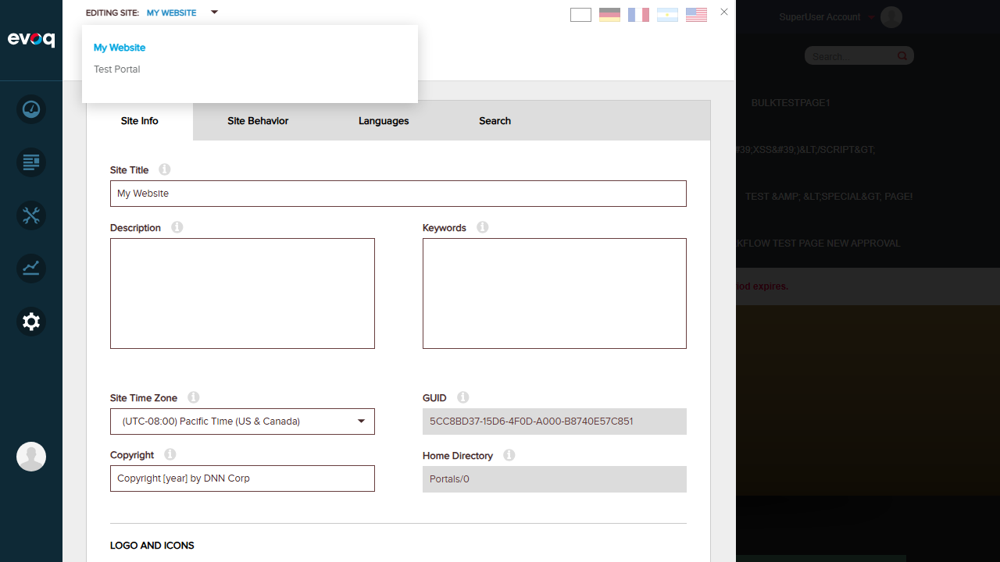
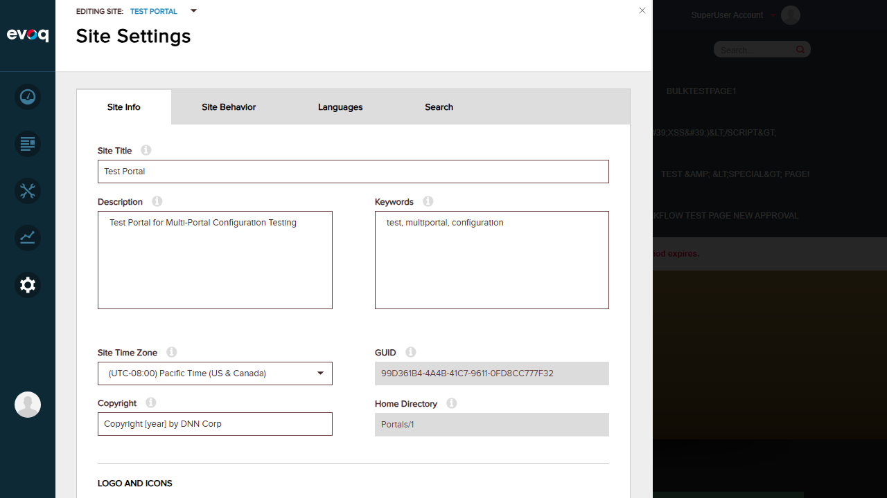
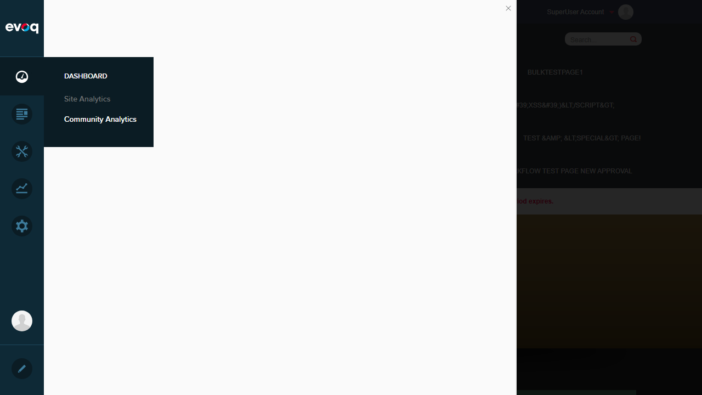
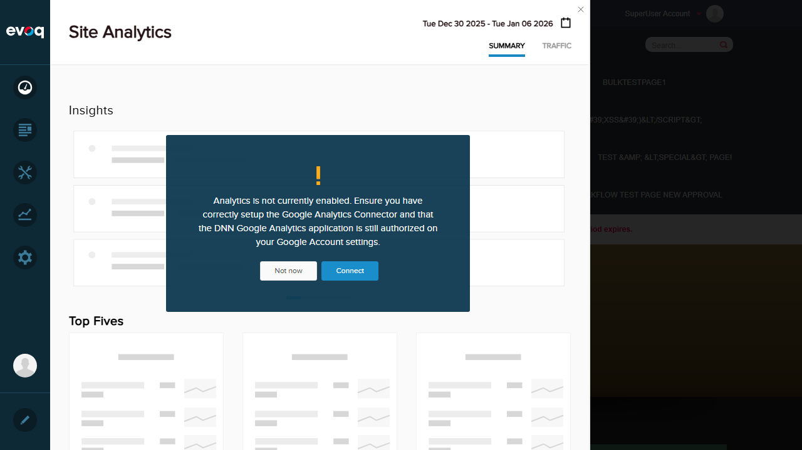

Test Summary
| Test Scenario |
Status |
Notes |
| Verify portal data isolation |
FAIL |
Community Analytics UI fails to load due to JavaScript error |
| Test cross-portal data prevention |
FAIL |
Cannot verify - Community Analytics panel does not render |
| Validate portal ID handling |
PASS |
Code review confirms proper implementation using EffectivePortalId |
| Test with portal groups |
FAIL |
Cannot verify via UI due to Community Analytics failure |
| Verify host user access |
PASS |
Host user can access both portals via PersonaBar site selector |
| Test portal switching |
PASS |
Portal switching works correctly in Site Settings |
Test 1: Host User Access Verification
PASS
What was tested
Verified that the host/superuser account can access the Community Analytics feature location and switch between portals.
Steps taken:
- Logged in as host user (SuperUser Account)
- Navigated to PersonaBar > Dashboard
- Verified Community Analytics menu option is visible
- Verified access to Site Settings and portal selector
Evidence

Screenshot showing successful login as SuperUser Account with PersonaBar visible
Test 2: Portal Switching
PASS
What was tested
Verified that the host user can switch between multiple portals using the "EDITING SITE" dropdown in Site Settings.
Steps taken:
- Navigated to PersonaBar > Settings > Site Settings
- Clicked on "EDITING SITE: MY WEBSITE" dropdown
- Observed two portals available: "My Website" (Portal 0) and "Test Portal" (Portal 1)
- Selected "Test Portal" from the dropdown
- Verified context changed to Portal 1 (Home Directory: Portals/1)
Evidence

Screenshot showing portal selector dropdown with two portals available

Screenshot showing Test Portal selected (Home Directory: Portals/1, GUID: 99D361B4-4A4B-41C7-9611-0FD8CC777F32)
Test 3: Community Analytics Panel Loading
FAIL
What was tested
Attempted to access the Community Analytics panel via PersonaBar > Dashboard > Community Analytics.
Steps taken:
- Clicked on Dashboard icon in PersonaBar
- Clicked on "Community Analytics" menu item
- Observed blank/empty panel area
- Checked browser console for errors
Issue Found
JavaScript Error: The Community Analytics panel fails to render due to a JavaScript initialization error.
TypeError: utility.serializeCustomDate is not a function
at dashboardClass.init (social-dashboard-combined-instance.js:1025:39)
at Object.init (social-dashboard-combined.js:16:23)
This error occurs in the dashboardClass.init function when trying to call utility.serializeCustomDate, which is undefined. This prevents the Community Analytics dashboard from initializing.
Evidence

Screenshot showing Dashboard menu with Community Analytics option highlighted

Screenshot showing blank panel area where Community Analytics should render
Test 4: Site Analytics (Control Test)
PASS
What was tested
Tested Site Analytics as a comparison to verify the PersonaBar Dashboard area is working properly.
Steps taken:
- Navigated to PersonaBar > Dashboard > Site Analytics
- Observed Site Analytics panel loading successfully
- Verified dashboard shows date range, tabs (Summary, Traffic), and sections (Insights, Top Fives)
Evidence

Screenshot showing Site Analytics panel loading correctly with Insights and Top Fives sections visible
Result: Site Analytics works correctly, confirming the issue is specific to Community Analytics, not the PersonaBar Dashboard infrastructure.
Test 5: Portal ID Handling (Code Review)
PASS
What was tested
Reviewed the source code to verify portal-specific data isolation is properly implemented.
Code Analysis
File: Services/CommunityAnalyticsController.cs (lines 33-45)
private int _effectivePortalId = Null.NullInteger;
protected int EffectivePortalId
{
get
{
if (_effectivePortalId == Null.NullInteger)
{
_effectivePortalId = ActiveModule != null
? ActiveModule.OwnerPortalID
: PortalController.GetEffectivePortalId(PortalSettings.PortalId);
}
return _effectivePortalId;
}
}
Key Findings:
- The
EffectivePortalId property correctly determines the portal context
- All API methods (GetDashboardInfo, GetTagStats, GetPopularContent, etc.) pass
EffectivePortalId as the first parameter
- This ensures data is always filtered by the current portal context
- Portal groups are handled via
PortalController.GetEffectivePortalId()
API Methods using EffectivePortalId:
GetDashboardInfo(EffectivePortalId, period, comparativeTerm, startDate, endDate)GetTagStats(EffectivePortalId, period, pageIndex, pageSize, ...)GetPopularContent(EffectivePortalId, null, period, ...)GetModuleDashboardInfo(EffectivePortalId, moduleName, ...)GetModuleContextData(EffectivePortalId, moduleName, ...)GetModuleTagStats(EffectivePortalId, moduleName, ...)GetModulePopularContent(EffectivePortalId, moduleName, ...)
Result: Code review confirms portal-specific data isolation is properly implemented at the API level.
Observations
1. Community Analytics JavaScript Bug
The Community Analytics feature has a critical JavaScript bug that prevents the UI from loading. The error utility.serializeCustomDate is not a function suggests a missing or improperly loaded utility function. This blocks all UI testing of portal-specific analytics features.
2. API Server Error
Direct API calls to /en-us/API/personaBar/CommunityAnalytics/GetDashboardInfo return HTTP 500 errors. This may be related to the Analytics Warehouse dependency or data initialization issues.
3. Code Architecture is Sound
Despite the UI failures, the code architecture properly implements portal-specific data isolation. All analytics API methods correctly use EffectivePortalId to filter data by portal context. Once the JavaScript issue is resolved, portal isolation should work as designed.
4. Multi-Portal Environment Confirmed
The test environment has two portals configured:
- My Website - Portal 0 (Home Directory: Portals/0)
- Test Portal - Portal 1 (Home Directory: Portals/1, Description: "Test Portal for Multi-Portal Configuration Testing")
5. Site Analytics Works Correctly
Site Analytics (a sibling feature to Community Analytics) loads and displays correctly, confirming the PersonaBar infrastructure is functional. The issue is isolated to Community Analytics.
Recommendations
- Fix JavaScript Bug: Investigate and fix the missing
utility.serializeCustomDate function in the Community Analytics scripts. Check if a utility module is failing to load or if there's a dependency issue.
- Verify Script Loading Order: Ensure all required JavaScript modules are loaded before
social-dashboard-combined-instance.js initializes.
- Test API Endpoint: Debug the 500 error on the Community Analytics API to ensure the backend services are properly configured.
- Re-test After Fix: Once the JavaScript issue is resolved, re-run portal-specific analytics tests to verify:
- Data isolation between Portal 0 and Portal 1
- Proper portal context switching in analytics data
- Cross-portal data prevention